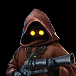

Jawa
Attacker effective against debuffed enemies as well as Droids
Attacker effective against debuffed enemies as well as Droids

Deal Physical damage to target enemy with a 50% chance to inflict Speed Down for 2 turns. This attack deals 35% more damage to enemies suffering from a negative status effect.
Deal Special damage to all enemies with a 75% chance to Stun Droids for 1 turn and a 25% chance to Stun other enemies for 1 turn.
Jawa gains 6% Evasion for each living Jawa ally, and gains 30% Turn Meter whenever he Evades an attack.